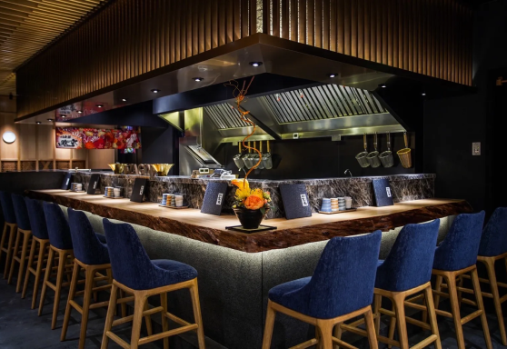

The authentic taste of Japan since 1910, now delighting taste buds in Indonesia since 2015. Step into our cozy ramen shop and immerse yourself in a culinary journey that spans over a century. With roots deeply embedded in Japan, ERamen has perfected the art of crafting exquisite bowls of ramen that capture the essence of traditional Japanese flavors. Our rich heritage and dedication to culinary excellence have made us a beloved destination for ramen enthusiasts across the globe. Indulge in our meticulously prepared broth, tender noodles, and perfectly balanced toppings, all meticulously crafted to provide an unforgettable dining experience. At ERamen, we invite you to savor the essence of Japan and discover why our legacy continues to thrive, right here in the heart of Indonesia.
At ERamen, our vision is to be the foremost purveyor of authentic and exceptional ramen, captivating taste buds and fostering a deep appreciation for the artistry and craftsmanship behind this beloved Japanese dish. We strive to create a dining experience that transports our guests to the heart of Japan, where the traditions and flavors of ramen come alive.
Our mission is to consistently deliver the highest quality ramen, crafted with meticulous attention to detail and a dedication to using the finest ingredients. We aim to showcase the time-honored techniques that have been perfected over generations, while also embracing innovation to create unique and memorable flavors that reflect the diverse culinary landscape.